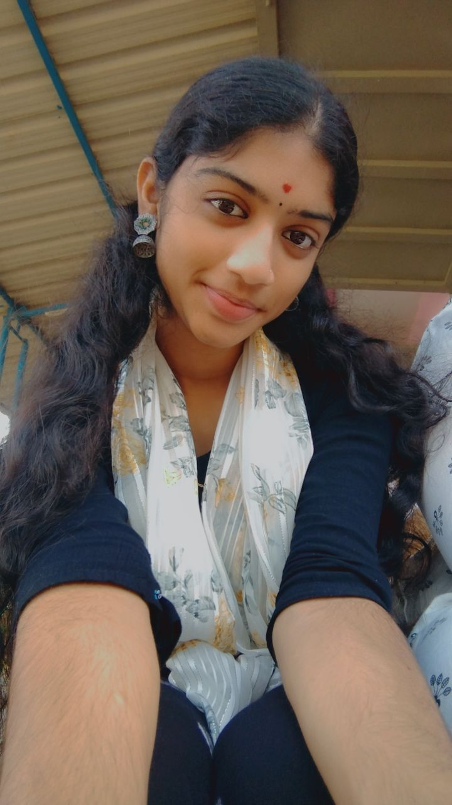

Hello! I am Peteti Naga Sai Tulasi Varam, a passionate Computer Science graduate from Sri Aditya Degree College. I have a strong interest in web development and software technologies. During my academic journey, I developed a foundation in programming and web technologies, including HTML, CSS, JavaScript, and Python.
I enjoy learning new technologies, exploring innovative ideas, and building web applications that solve real-world problems. My goal is to become a skilled software professional by continuously improving my technical and professional abilities.
I am a quick learner with strong communication skills, a positive attitude, and the ability to work effectively in team environments. I am actively seeking opportunities where I can apply my knowledge, gain practical experience, and contribute to organizational success while growing in my career.